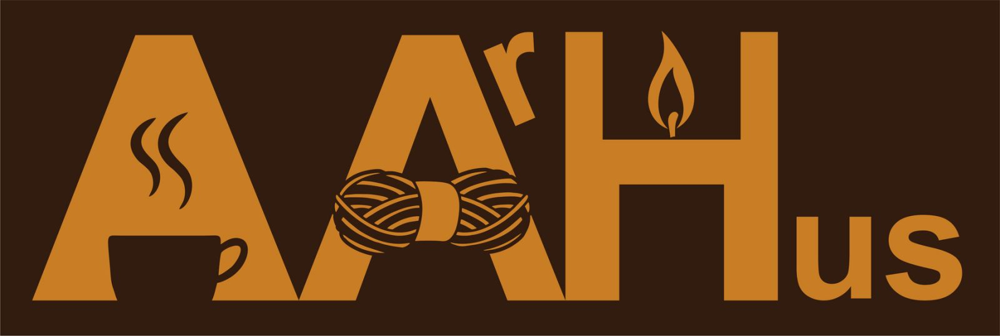
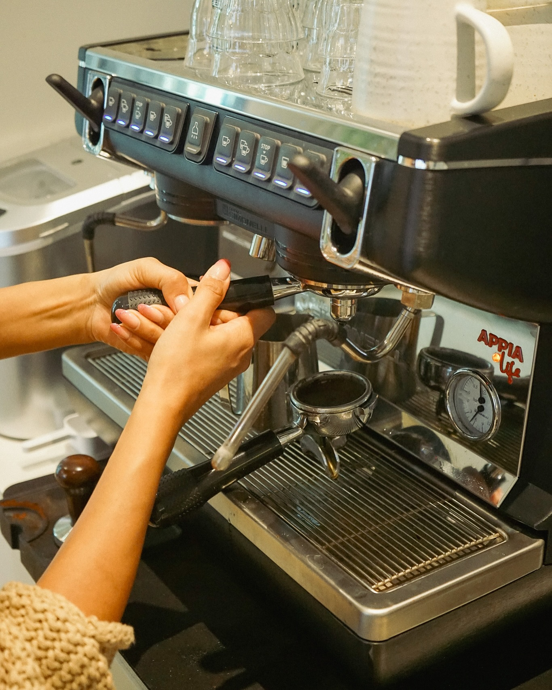
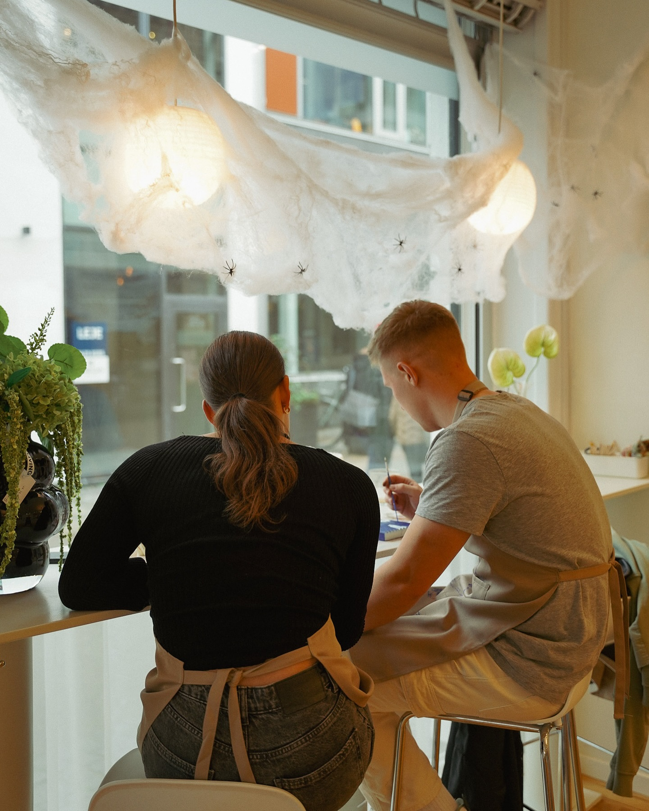
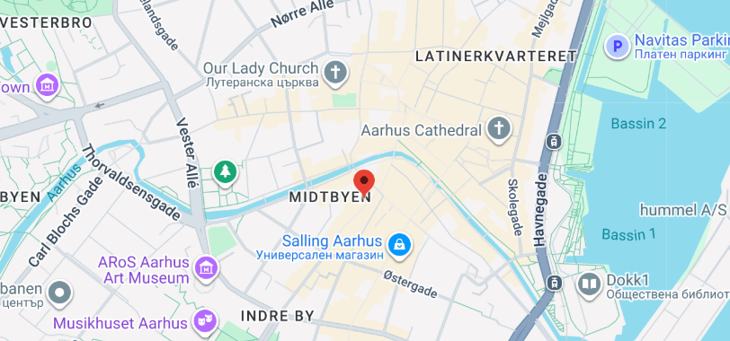

Creative Aarhus offers a cozy, inspiring atmosphere where you can join hands-on workshops like candle-making or ceramic painting.

The space is designed to help you relax, explore your creativity, and enjoy the process while having all materials and guidance provided.

Prices usually depend on the activity you choose — for example, candle-making packages often range from around 300 to 500 DKK, depending on how many items you create.

Most creative sessions and workshops last about 1.5 to 2 hours, making them a perfect compact activity to fit into your day. If you want a creative moment you can book your place here.
